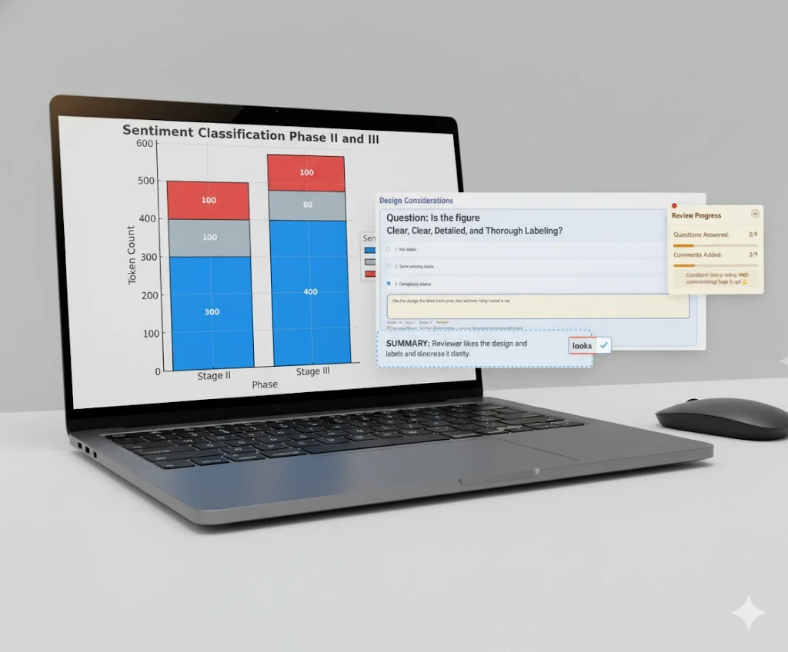

Visual peer review with nudges represents a novel approach to collaborative feedback in data visualization and design contexts. Our research explores how combining visual annotation capabilities with strategic nudging mechanisms can improve both the quality and timeliness of peer reviews.
Traditional peer review processes often suffer from delayed responses, incomplete feedback, and lack of contextual specificity. By integrating visual markup tools directly into the review interface and employing behavioral nudges based on established principles from cognitive psychology, we aim to address these fundamental challenges.
This project investigates the intersection of human-computer interaction, data visualization, and behavioral economics to create more effective collaborative review systems. Our approach enables reviewers to provide precise, contextual feedback while gentle nudges ensure sustained engagement and timely completion.

Precise Feedback
Visual markup tools enable reviewers to provide contextual, specific feedback directly on visualizations.
Behavioral Nudges
Strategic nudges based on cognitive psychology principles guide reviewers toward comprehensive feedback.
Timely Reviews
Gentle prompts and progress tracking ensure sustained engagement and completion of reviews.
Data-Driven Insights
Analytics reveal patterns in review quality and help educators improve visualization pedagogy.